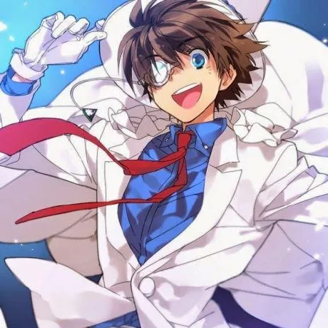

x: @OSGByte_eth_
github: saguillo2000
linkedin: Oriol Saguillo
My passion for Computer Science and Economics has led me into the explore of MEV and blockchain protocols. I’m always eager to learn new things and connect with people from around the world.
I particularly enjoy research and engineering complex systems. Currently, I’m learning Rust 🦀 to build efficient bots for MEV, playing Poker and improving investing strategies.
I’m also working towards becoming an expert in protocol research, I will start next year as a PhD student at IMDEA Networks under the supervision of Dr. Lucianna Kiffer.